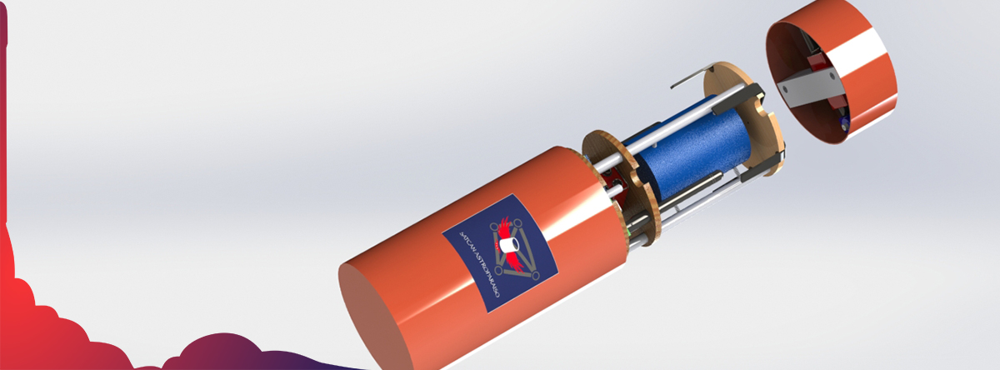

Equipo SatCan Astroparaiso, participante del concurso iberoamericano de satélites enlatados de la Universidad Nacional Autónoma de México
Página de información
Integrantes del equipo
- Sebastian Cajas Ordoñez - Líder de equipo - Ing. Electrónica y Telecomunicaciones, dentro del equipo se desempeña en las Telecomunicaciones y diseño electrónico.
- Carlos Fernando Realpe Garces - Ing. Físico, candidato a Magister de la Maestría en Ingeniería Física, dentro del equipo se desempeña en realizar modelos Físico-Matemáticos, simulaciones y diseño de autogiro.
- Camilo Segura Quintero - estudiante de Ing. Electrónica y Telecomunicaciones, dentro del equipo se desempeña en el diseño electrónico, desacople de etapas y encapsulado.
- Victor Manuel Macias Martinez - estudiante de Ing. Electrónica y Telecomunicaciones, dentro del equipo se desempeña en estudiar limitanes de costo y peso, sistemas electrónicos y comunicaciones.
- Angela Lucia Mutiz Popayán - estudiante de Ing. Física, dentro del equipo se desempeña en el diseño de pruebas para protección de carga útil y modelos Físicos de caída.
- Maicol Andres Pacheco Peña - estudiante de Ing. Física, dentro del equipo se desempeña en el diseño de modelos Físico-Matemáticos y materiales.
- Cristian David Tobar Montilla - Ing. En Automática Industrial candidato a Magister de la Maestría en Automática, dentro del equipo se desempeña en el diseño general, ademas de la creación del modelado digital CAD del satelite en SolidWorks.
En que están participando?
El equipo SatCan Astroparaiso esta participando en un concurso iberoamericano organizado por la Universidad Nacional Autónoma de México, este concurso consiste en diseñar e implementar un satelite tipo CanSat(Satelite Enlatado), de dimensiones cilíndricas con 9cm de diámetro y 22cm de altura, la misión consiste en elevar a 400m de altura este tipo de satelte y liberarlo, en todo momento este disositivo debe estar enviando información de variables físicas a una estación terrena, exactamente a los 200m de altura el satélite debe desplegarse en dos etapas y un sistema de auogiro que hara que se le reduzca la velocidad hasta legar al suelo con una velocidad máxima de 12m/s, ademas la primera etapa debe saber en todo momento en que posición se encentra la segunda etapa, a continuación mostramos nuestro diseño
.

Con este diseño se participara en la competencia, hasta ahora ha aprobado con buenas calificaciones 4 etapas del concurso, se están esperando indicaciones para seguir con la competencia ya que por cuestiones de la pandemia surgida por el virus Sars CoV-2, la competencia paro, pero el equipo no deja de trabajar para mejorar los sistemas ya diseñados.
Qué se espera con este concurso?
Con este concurso se espera impactar en la Universidad del Cauca y mostrar que se pueden realizar trabajos en Ingeniería Aeroespacial de forma adecuada.
Experiencias de los concursantes

Nombre
Experiencia.

Nombre
Experiencia.
Nombre
Experiencia

Visita tambien a la rama IEEE Unicauca
Links de interés en Aeroespacial
Links de interés en astronomía
Visítanos en nuestras redes sociales
-
Dirección
Departamento del Cauca, Colombia
Universidad del Cauca
Sede Tulcán, Dpto de Electrónica - Ver en mapa
-
e-mail
-
Teléfono
- © Todos los derechos reservados.
- Designed by: AESS Unicauca